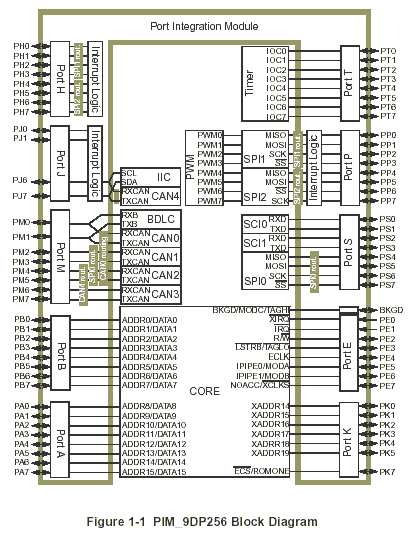
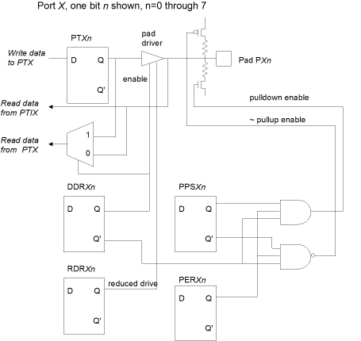
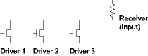
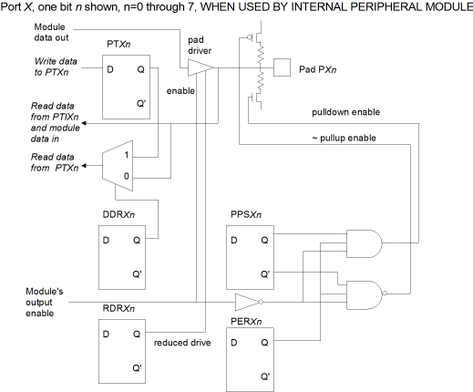
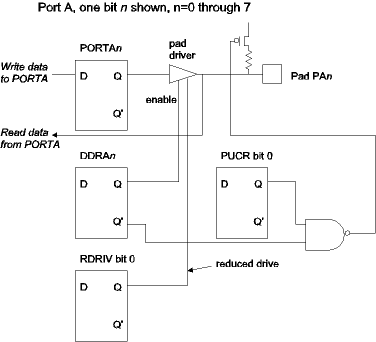

| Previous Section | Next Section | Index | Questions | Search the Text |
Microcontrollers contain various peripheral devices, however all microcontrollers contain general purpose I/O pins. These pins can be programmed (via control registers) to be input pins or output pins. The pins are typically grouped together in sets of eight, called ports. Control and data registers manipulate all eight pins of a port.
The ports of the Freescale MC9S12DP256B microcontroller are shown below. This figure comes from the Port Integration Module Block Users Guide.

There are eight eight-bit ports (A, B, E, H, M, P, S, and T) and two narrower ports (J and K) that can be used for general purpose I/O when they are not being used by internal peripheral modules (ports H, M, P, S, T, and J) or for the external memory interface in the Core Module (ports A, B, E, and K).
We will discuss an arbitrary 8 bit port called X, where X is one of ports H, M, P, S, or T. The description also applies to the four implemented pins of port J. The port has control registers, DDRX, RDRX, PPSX, and PERX, and data registers PTX and PTIX. Note that register PTIX is read-only and always reads the level on the device pads. Each bit in these registers corresponds to a single pin PXn such that bit n in the register is for pin n of the port. The schematic for a single pin is shown below.

If DDRXn is 1, then pin n is programmed as an output pin. The value written into data register bit PTXn drives the interface pad. If RDRXn is 1, then the drive current is reduced from 10mA maximum to 2mA maximum. This will save power and reduce radio interference, but does make the output response slower. Reading from the data register PTIX will read the value at the pad, which should be the same value written to PTXn if the pad is not shorted out.
If DDRXn is 0, then pin n is programmed as an input pin. The value at the pad can be read as data register bit PTIXn. Data register bit PTXn is not used, but can be written by the processor. A read from PTXn will read the value at the pad, not the register! As an input pin, it is possible to enable either a pull-up or pull-down resistor which will draw 130 uA. To enable the pull-up/pull-down register bit PERXn must be 1, then PPSXn is 1 for the pull-down and 0 for the pull-up.
Unused pins should either be configured for output, or configured as input with the pads physically connected to ground, or as input with a pull-up or pull-down enabled. Input pads should never be allowed to float because they can consume current and generate (electrical) noise. Use of a pull-up input allows implementation of a "wired-or" circuit. Multiple devices can drive the input using "open-drain" configuration such that the devices can pull the circuit to logic low, but the pull-up will keep the circuit at logic high if no device is pulling it low.

To use the pins independently, the registers are written using the bset and bclr instructions, while they are read using the brset and brclr instructions, as described in a preceding section. For instance, if we wanted to use port H pin 2 as an input pin without pull, we would configure with the code:
bclr DDRH #4
bclr PERH #4
We would read the value of the pin, and branch to foo2 if a 1, with the code:
brset PTIH #4 foo2
If we wanted to use port H pin 3 as an output pin with reduced drive, we would configure with the code:
bset DDRH #8
bset RDRH #8
We set the pin high with:
bset PTH #8
And set it low with:
bclr PTH #8
Any pin can be used a bidirectional or three-state pin by changing the value of DDRH to 1 to drive 0 or 1, and DDRH to 0 for high-Z.
When an internal peripheral module or memory interface is enabled, its use of the port pins overrides the general purpose I/O usage; however some configuration is still possible.

The module controls the pins direction and drive level. However it is possible to configure reduced drive when used as an output and pull-up/pull-down when used as an input. The value on the pad can always be read from register PTI. Register PT has no effect but can be written and, if DDR bit is 1, read.
Some ports (M and S) have an additional control register that enables an open-collector mode when used as an output. This is particularly useful when the peripheral module is driving the port pins. When used as general purpose pins, open-collector operation can be simulated by using the appropriate DDR bit to control the output between driving the pin low and high-Z.
Ports P, H, and J can also be used as external interrupt trigger pins. This operation, sometimes called Key Wakeups, will be discussed later in the section External Interrupts.
Ports A, B, E, and K are part of the CPU core module and have a simpler hardware interface. The data registers are named PORTA, PORTB, PORTE, and PORTK, respectively, and behave like a PTIX register when read and like a PTX register when written. Direction is controlled in the normal fashion via data direction registers DDRA, DDRB, DDRE, and DDRK. There are no pull-down resistors, and pull-up resistors for pins that are input pins are controlled simultaneously for the entire port using the PUCR register, while reduced drive for pins that are output pins are controlled simultaneously for the entire port using the RDRIV register. Bit 0 controls port A, bit 1 controls port B, bit 4 controls port E, and bit 7 controls port K. Port E has some special considerations and typically should not be used for general purpose I/O. Port K bit 7 has a reserved use as well during power-up and typically should not be used for general purpose I/O. For full information about these ports, see the document HCS12 Core Users Guide, section 12.

Continue with Parallel I/O Ports
Return to the Index.